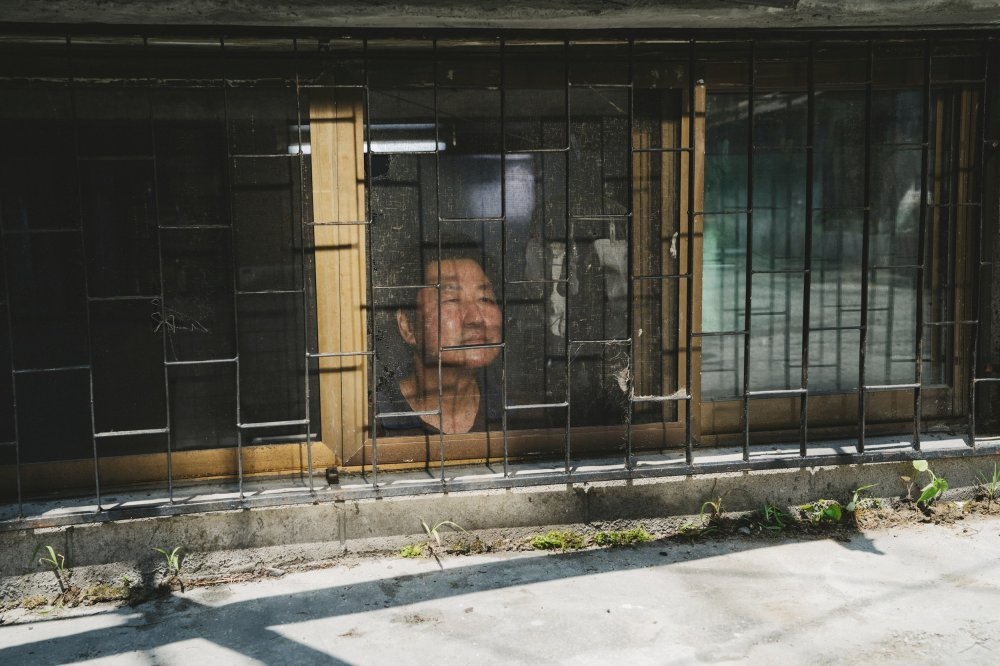

4 APR 2024 | BY EMILY LOH
Capture from the award winning film “Parasite” portraying the extreme ends of poverty in the city of Seoul living underground
As reported in 2018, South Korea became the country with the highest suicide rate out of all the OECD(Organization for Economic Cooperation and Development) countries. A large gap in rates was shown between South Korea and other big name countries such as Japan and the United States. Such an advanced country with quality education, a strong existing culture, and an economy from the introduction of brands like Samsung, it is hard to imagine a leading country struggling with mental health. Why does South Korea have this problem?
Hell Joseon
In 2019, South Korean director Bong Joon-ho released the movie ‘Parasite’ which swept the world up from their feet. It was mainly well liked for its dramatized depictions of class differences in the country. It reflected the generational riches and poverty experienced in the country. In its own way, the movie depicted South Korea’s trouble with the socioeconomic statuses of many. The movie was an impactful way to show the world what Hell Joseon was.
Coined by the youth in Korean media, Hell Joseon was a term to describe their hopelessness in the hellish society they felt like they were trapped in. Things like unemployment and expensive housing made it hard for many people to escape their living conditions. To earn more and to go to school in a better place, many move to the city for opportunities. But that often came with expensive housing.
The South Korean minimum wage is about 9,620 won hourly, roughly $7, while the average apartment costs anywhere from $500k to $900k. A large majority of people aren’t able to buy property and rent out instead. Seeing that the minimum wage is so low, it is difficult for people of low income to rent out even a small studio apartment at the cost of around $500 per month. Many individuals turn to loans to rent out a small place.
Because of this loan culture, South Korea is the Asian country with the highest household debt. People take out loans for many reasons, most notably tutoring academy fees that elevate students’ skills, keeping them in the competition for good schooling. Other reasons include luxury products such as name brands and cosmetic procedures, to reflect a rich and beautiful lifestyle that the culture highlights as a sign of success. Many citizens fall into this toxic cycle of money used to invest in a better future, trying to guarantee chances of success for themselves and their families.
Family
Because so much money is put into investing in family and one’s honor, there are a lot of pressures to do well in society, depending on your role. In recent times, it was reported that a large percentage of suicide cases in South Korea were due to the elderly population. With further investigation, it is likely due to the isolation many elderly people experience after the money they worked hard to earn has been used on their children. Now that their children are busy working to make a living, the older generations are left to fend for themselves, with little government support.
On the other hand, roles in the family such as the father and mother, hold extreme pressures. The father would often have the pressures of earning for the stability of their family and a lot of the burden is pushed on the male figure in the household. For mothers, they have the responsibility of raising children with a competitive edge. Even working moms must continue to encourage their children for academic growth and compete with other moms socially by proving to other families that they’re doing it right.
Every family member is reliant on each other and the socioeconomic benefits they bring to the table are important to keep future generations afloat. Because of the responsibility they all must carry, individuals can be disheartened when they don’t meet their own or society’s expectations, feeling like a significant burden in the family function.
Education
For the role of the children, studying is the most important. Children are often put to after-school academies called ‘hagwon’ for tutoring students. Over 80% of 5-year-olds are put into these institutions to start schooling off the right foot. Even from the start, the education system is highly competitive. Every family doesn’t want to lose out, investing time and money into putting their children in off-campus tuition.
Society is built around raising the smartest and most passionate workers through the brutal education system. Popular South Korean drama SKY Castle depicts the immense pressure and competition high school students experience to get into one of the SKY universities (Seoul National University, Korea University, and Yonsei University). The artistic depiction of the struggle resonates with their national audience and reveals the reality of their society to the world.
Every student aiming to get into college studies hard for the CSAT, the SAT Korean, and attempts the exam that happens once a year. The significance of this exam is so immense that even police give rushing students a free ride to the exam hall and flights are delayed to prevent noise. With so much pressure on the students’ shoulders, you can only imagine how devastating one may feel when their scores don’t meet expectations. Considering how much time, money, and effort put into these scores, it would be morale-crushing to those who fail it.
Workplace
Even after schooling, it isn’t easy to get a job. If you didn’t attend college or the college you studied in is not well known, you could be working multiple different part-time jobs at minimum wage. A few jobs may be easier to land if you graduate well from a top university. But even the entrance to those jobs is difficult. Big companies like Samsung have their standardized tests. Some find government jobs a more stable option, but the civil service exam still requires many hours of studying, and many civil service jobs have low salaries.
After getting into a position, many people find the need to adjust to the hierarchical workplace their company might have implemented. South Korea relies a lot on the age/seniority system. To work your way up, a lot of time and effort is required. The culture highlights a hierarchical workplace with strict respect towards those in higher positions. They value Confucian ideals of respecting authority and benefiting the group. Working in this environment can be difficult for people who want to speak up about their opinions and value the power of individuality over a group mindset. This can cause employees to gain some self-doubt about their work when their opinions conflict with those of their superiors or colleagues. These stressors build up with time and become heavy burdens on top of socioeconomic status problems one might have.
Societal Judgement
In the workplace, superiors are blunt and honest with their employees. If not done correctly or in a way that doesn’t suit their standards, the higher-ups wouldn’t be happy with it and have clear-cut expectations. Even colleagues may have this interaction with each other, depending on seniority.
South Korea has a culture that, to an extent, follows the Asian stereotype of strict, blunt criticisms, comparing you to someone else in many cases. These expectations usually are a sign of encouragement or push to individuals in society to realize their mistakes and work on them. They aren’t afraid to point out your class position and make you reflect on your grades or notice a weight gain and cause you to think about losing weight. But people have feelings. These blunt comments are often painful words to hear.
Not everyone has a support system and positive encouragement from those around them, especially individuals who live alone, buried in their work. Harsh criticism pointed towards one’s appearance, skills, and economic standings from a close friend, family, or even a stranger may lead them to doubt their reason for existence. As this Quora user points out, these comments people make aren’t meant to be insulting. Using this way of speech, people of this culture find it a way to voice their concern or interest in you. But after hearing criticism, some people may feel out of place when they see other people achieving what they aren’t able to. In their struggles, they could find it very hard to reach out for help.
South Korea has long believed mental illness is a taboo subject. Many see mental illness as a sign of weakness and that you should overcome it in your strength, push it aside, and move on. Not many people believe in reaching out for help, and they teach this mentality to the next generation to keep them, in their terms, strong and mentally healthy. As a consequence of this, the environment around someone struggling does not improve because the people around them don’t believe in mental illnesses and aren’t very open to discussing it.
You can imagine: it must feel isolating.
Emerging Social Changes
But times have started to change and there are small pushes towards a better community in South Korea. Despite the pandemic, the country recovered from the surge of unemployment. From 2021 to 2023, they found supply and demand in jobs and marketed job positions well. The unemployment rate was at historically low levels and was unusual for them. With an unemployment rate of 2.1% in 2023, the country employed a large part of the job-seeking population and kept the economy afloat.
In the workplace, brave voices arose to fight against injustice. Many employees who received unfair treatment due to the social hierarchy in the workplace spoke up. These stories remind the country not to stop fighting for human rights. Citizens fight for their rights by protesting on the streets, sharing it on the internet, and using resources such as hotlines to report power abuse.
Though the country struggles to push forward with the rights of minorities and those with less power, South Korea is slowly getting there. With more effort, one by one, people will develop an open mind and be able to work together to build a healthier environment for everyone and see themselves thriving in receiving support from one another.